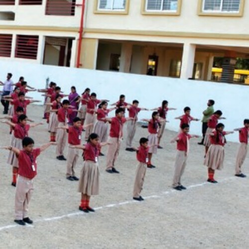

Campus Life
SRI CHAITANYA TECHNO SCHOOL
SRI CHAITANYA TECHNO SCHOOL (KAGGADASAPURA) was established in 2013 and it is managed by the Pvt. Unaided. It is located in Urban area. It is located in SOUTH4 block of BENGALURU U SOUTH district of Karnataka. The school consists of Grades from 1 to 8. The school is Co-educational and it doesn't have an attached pre-primary section. The school is N/A in nature and is not using school building as a shift-school. English is the medium of instructions in this school. This school is approachable by all weather road. In this school academic session starts in April. The school has Private building. It has got 8 classrooms for instructional purposes. All the classrooms are in good condition. It has 2 other rooms for non-teaching activities. The school has a separate room for Head master/Teacher. The school has Pucca boundary wall. The school has have electric connection. The source of Drinking Water in the school is None and it is functional. The school has 4 boys toilet and it is functional. and 6 girls toilet and it is functional. The school has a playground. The school has a library and has 2000 books in its library. The school does not need ramp for disabled children to access classrooms. The school has 42 computers for teaching and learning purposes and all are functional. The school is having a computer aided learning lab. The school is Not Provided providing mid-day meal.

COMPUTER LAB
The modem era education system is technologically driven. Students can access any information from any part of the world just with a click. All our computer labs are well-equipped and have the latest software and high-speed Internet connectivity for the benefit of students.

SCIENCE LAB
There is no study of science without experimentation and observation. Sri Chaitanya emphasizes on conducting detailed laboratory sessions with the students to make them explore and experience the real essence of learning. We not only provide well-equipped laboratories for students but also inspire them to make the most out of the facility to understand scientific concepts in a practical way.
school achievments

NASA RESULT - 2021
Sri Chaitanya Emerges As World Champion For 8th Consecutive Year In NSS Space Settlement Contest 2021.

NASA RESULT 2021 - COUNTRY WISE COMPARISON
Sri Chaitanya Continues Its Sway As World No.1 By Winning 64 Awards In NSS Space Settlement Contest 2021.

NASA RESULT 2021- COMPARISON WITH OTHER SCHOOLS
Sri Chaitanya Proved To Be ASIA's NO.1 School Again By Winning 64/107 Awards From INDIA In NSS Space Settlement Contest 2021.
managemet and our journey
-
Our Journey
Sri Chaitanya first surfaced on the academic horizon in the year 1986 and within a span of 25 years went on to become Asia's largest educational group. The past two and a half decades witnessed Sri Chaitanya introducing novel academic programmes that have helped students enter the nation's premier engineering and medical colleges. The manner in which the Group has transformed the outlook towards education has been nothing short of exemplary.
-
Management

Dr.B.S Rao & Dr.Jhansi Lakshmi Bai Founder & Chairman Dr. Boppana Satyanarayana Rao and Dr. Jhansi Lakshmi bai are the Founders of Sri Chaitanya Educational Institutions. Familiar to many as Dr. B. S. Rao garu, he is a household name among the student and parent community of Andhra Pradesh. Mrs. Sushma Boppana Academic Director Mrs. Sushma Boppana studied her B. Tech. – from the prestigious B I T S – Pilani and masters in IT from US University. Mrs. Sushma quickly blended with Sri Chaitanya system as Chief of the Academic Planner and academic mentor. Mr. Sridhar Yalamanchili Director Mr. Sridhar did his Bachelor’s in Engineering from Wayne State University and Master’s from Northern State University, USA. He has more than a decade’ experience in Financial and IT sectors. He looks after administration, finance and application of IT in Institution. Mr. T. Nagendra Director Mr. Nagendra has been with the institution from the day of inception and has reached to the stage of Director-Administration with the qualities of Devotion, Dedication to the Duty and under his strategic planning, Sri Chaitanya is growing day by day and glowing year by year. Man of Simplicity, Synonym of Sincerity is the apt word suitable to him. Mrs. Seema Boppana Director Mrs. Seema graduated with a Bachelor’s Degree in Science majoring in Management and marketing. Ms. Seema Boppana gained her initial work experience as Administrative Director of Sri Chaitanya Educational Institutions from 2008, she translated the dream of Sri Chaitanya Techno Schools into reality. She designed school curriculum in collusion with the academic experts from the IITs and the NITs.
Our Alumni
Seema Boppana

Sushma Boppana
Sushma Boppana
Dr. Sushma Boppana is a Pathology Specialist in Brookline, Massachusetts. She graduated with honors in 1987. Having more than 34 years of diverse experiences, especially in PATHOLOGY, Dr. Sushma Boppana affiliates with Signature Healthcare Brockton Hospital, cooperates with many other doctors and specialists in medical group Carlson Pathology Associates Pc. Call Dr. Sushma Boppana on phone number (631) 327-4841 for more information and advice or to book an appointment.

Dr.BS Rao
Dr. BS Roa
Founder of the Sri Chaitanya Educational Institutions, Dr. B.S. Rao has been honored with the ‘Lifetime Achievement in Education Leadership’ award by Education World for his contribution to Intermediate. The award was presented by Sumer Singh, principal, Daly College, Indore at a function. Dr. Rao, a medical doctor by profession started the Sri Chaitanya institutions in Vijayawada after serving in England and Iran.
WITH Sri Chaitanya Educational Institutions (SCEI) emerging as the pioneering institution in making Andhra Pradesh the foremost State in terms of the number of students getting admitted to the Indian Institutes of Technology (IIT) and other prominent centres of education, it is clear that its chairman, Dr B.S. Rao, has changed people’s perceptions of competitive examinations. Concept-based teaching is needed. Mugging of subjects must be discarded and students must be trained to use concepts.

Dr.Jhansi Lakshmi Bai Rao
Dr.Jhansi Lakshmi Bai Rao
Dr. Moparthy Jhansi Lakshmi Bai is a Gynecologist in Lothkunta, Hyderabad and has an experience of 39 years in this field. Dr. Moparthy Jhansi Lakshmi Bai practices at Jayaprada Hospital in Lothkunta, Hyderabad. She completed MBBS from Guntur Medical College, Guntur in 1972 and MD - Obstetrics & Gynaecology from Kakatiya Medical College, Wrangal in 1976. She is a member of Federation of Obstetrics and Gynaecological Societies of India (FOGSI). Some of the services provided by the doctor are: Breast Screening, Artificial Insemination, Cervical Cerclage, Endoscopic Surgery and Amniocentesis etc.